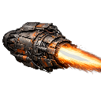

Wiki / Stat Reference / Special Modules / Afterburner

Special Modules
Afterburner
Active speed booster. Toggle for short bursts of high-speed travel.
- Special Type
- Booster
- Buff Type
- Ship Speed
- Module Tier
- Tier 2 Standard
- Faction
- Miner Rebellion
- Scope
- Ship
Base Buff Value
0.5
Base Cooldown
20s
Effect Radius
0
Base Mass
4
Defense
- Base Health Buff
- 0
- Base Shield Buff
- 0
- Base Resistance Buff
- 0
- Base Evasion Buff
- 0.1
- Base Stasis Resistance
- 0
Mobility & Sensors
- Base Mass
- 4
Slots & Capacity
- Max Stack Count
- 1
Effects & Buffs
- Base Buff Value
- 0.5
- Base Buff Duration
- 8
- Base Cooldown
- 20s
- Passive
- No
- Toggleable
- Yes
- Base Speed Buff
- 0.5
- Base Damage Buff
- 0
- Effect Radius
- 0
- Affects Fleet
- No
- Percent Based
- Yes
Repair
- Base Repair Time
- 1m
- Repair Cost Minerals
- 30
- Repair Cost Helium
- 5
- Repair Cost Antimatter
- 1
Cost & Build Time
- Build Time
- 1m
- Build Cost Minerals
- 150
- Build Cost Helium
- 25
- Build Cost Antimatter
- 5
- Lab Time Total
- 3m
Requirements
- Required Lab Level
- 2
- Required Player Level
- 3
- Limited Edition
- No
- Requires Research
- Yes
- Required Research ID
- 93d3447e-5af4-5958-8b43-0c65ba1ac052
Mark Levels
- Mark Levels
- —